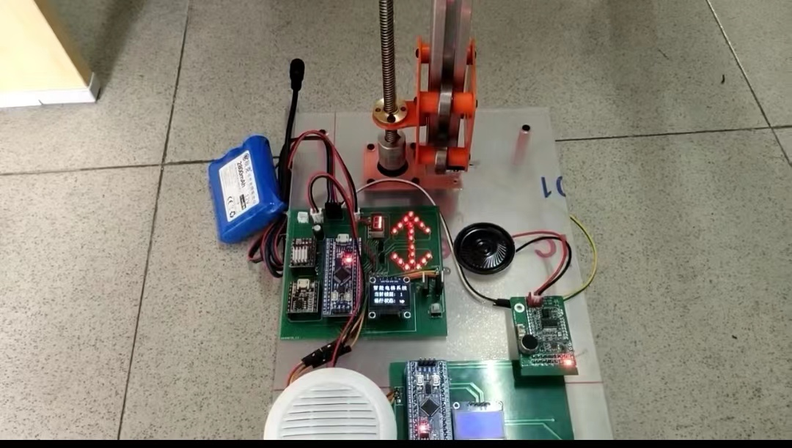
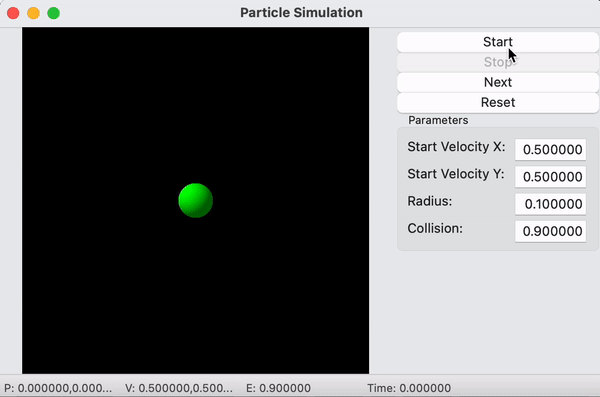

Personal Introduction
Contact Information
Email: yuan_cao1@brown.edu
Phone: (401) 259-5786
Education
Bachelor of Electrical Engineering and Its Automation - Chang'an University(September, 2018 – July, 2022)
Master of Electrial and Computer Engineering - Brown University(September, 2022 – June, 2024)
Work Experience
Teaching Assistant of Digital Electronics Systems Design - Brown University
(October, 2022 - January, 2023)
(September, 2023 - Present)
Technical Skills
Languages: Python, C/C++, Java, MATLAB
Hardware: MPLAB, Multisim, Altium Designer
Others: Linux, Git, COMSOL, Torch
Research Interests
Embedded Systems and Intelligent Bio-devices
Brain-Computer Interface
Computer Vision and 3D Model Construction
Download my resume.
Research and Internship Experience
Design of an Intelligent Elevator Measurement and Control System(June, 2021 – June, 2022)
Description:
Engaging in this research endeavor, I engaged in the development of an 8-storey elevator analog control system based on STM32F103C8T6 chip, and realizes the method of contactless elevator control based on single chip microcomputer.
Achievements:
- Conceptualized and meticulously designed various circuit modules to enable diverse functionalities and regulate the intricate operational logic of the elevator.
- Innovatively introduced features such as voice announcements and image display functions, elevating user interaction and usability.
Development of an Electronic Nose for Environmental Monitoring Applications(July, 2021 – October, 2021)

Description:
During the course of this internship, I undertook a focused exploration of optimizing device sensitivity by systematically adjusting diverse parameters, leading to the identification of optimal values within a reasonable range through an iterative process of continuous experimentation.
Achievements:
- Proficiently utilized COMSOL for simulations to assess and validate the sensor's performance across various scenarios.
- Analyzed data from sensors collected in different environmental conditions and with varying structures, contributing to a better performance and behavior of the sensor.
Embedded System for Prosthetic Applications(ESPA)(December, 2022 – Present)

Description:
ESPA is a small-form microelectronic signal processing device developed for mobile Brain-Computer Interfaces (BCI) applications. I engaged in the development of the Bluetooth module and leveraging Redis to enable remote and rapid configuration of distinct modules for ESPA.
Achievements:
- Engaged in establishing preliminary HID services using the RN4870 Bluetooth chip to enable mouse movement control in diverse environments.
- Working on implementing remote Bluetooth control through Redis Streams to allow for the dynamic modification of Bluetooth runtime parameters and initialization of the Bluetooth module via input YAML file.
Projects
Particle Motion Simulation
The particle motion algorithm was designed and implemented to simulate particle movement within a two-dimensional space. By providing adjustable parameters, users could customize the behavior of the particle system. Utilizing the wxWidgets GUI framework, the motion of particles was visualized, offering an intuitive user experience.
3D Model Reconstruction
Utilized C++ to design a data structure to store information about 3D model points, lines, and surfaces. Based on this, constructed algorithms to accurately reconstruct 3D models. Additionally, developed a GUI interface that enables users to intuitively deconstruct and reconstruct models. Ensured compatibility by implementing the capability to import and read various file formats.
Database, Network and System Design
- Employed fine-grained locks to ensure secure access and modification of the database within a multi-threaded environment. Simulated a testing scenario with 100 concurrent users executing operations of key-value pair addition, deletion, modification, querying and printing, successfully maintaining the server's steadfast operation throughout the testing phase.
- Utilized C language to design and implement server functionalities on the Linux system, concurrently leveraging TCP/IP communication protocol to ensure resilient data transmission between clients and servers.
- Designed and implemented a functional Shell program using C, providing features such as user interaction, command parsing, and basic system calls.